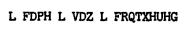
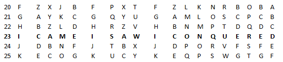

Origens da criptografia
O termo criptografia é derivado das palavras gregas para "escrita oculta",é a prática de criptografar informações transmitidas por um emissor para que possa ser interpretada apenas pelo destinatário pretendido.Técnicas deste tipo já existem desde as civilizações antigas com utilização em mensagens militares e diplomáticas,os antigos espartanos por exemplo cifravam suas mensagens militares com a cifra César,cujo nome advém da sua utilização por Júlio César.
Nos dias de hoje,com a utilização generalizada de computadores e de redes de comunicação de dados,a criptografia ganha sua devida importância desde a autenticação de utilizadores,privacidade de comunicações pessoais como por exemplo a criptografia de ponta a ponta do Whatsapp e proteção de dados críticos dos usuários contra hackers.
Embora suas raízes remontem a milhares de anos, a criptografia, juntamente com a criptoanálise, é considerada um campo relativamente jovem. Os avanços mais expressivos ocorreram apenas nos últimos cem anos, acompanhando o surgimento da computação moderna no século XIX e o início da era digital. Foi nesse contexto que matemáticos, cientistas da computação e criptógrafos desenvolveram métodos robustos para assegurar a integridade e a confidencialidade dos dados contra ataques de hackers, cibercriminosos e curiosos.
Cifras e como funcionam
Uma cifra é um tipo de código secreto no qual codifica ou criptografa informações para torná-las ilegíveis sem a chave ou algoritmo de decodifcação corretos,ela pode assumir diferentes formas como a substituição de letras por símbolos ou a reorganização da ordem das palavras.A segurança destas cifras podem ser analisadas pela necessidade de se utilizar força bruta ou não para solucioná-la,por exemplo,se a força bruta requer que seja testada 2256 vezes e conseguimos encontrar alguma fraqueza com "apenas" 2250 testes,já podemos dizer que a cifra foi quebrada.Ou seja,uma quebra de cifra é um sinal de que a cifra precisa ser mais resistente a técnicas de criptoanálise e que por enquanto não é tão segura quanto foi assegurado pelo desenvolvedor
Cifra de César
A cifra de Júlio César é uma cifra de substituição,ou seja,nesta cifra troca-se cada letra ou grupo de letras da mensagem de acordo com uma tabela de substituição.
Exemplo:
Combinações:
Assim, podemos ver que a única mensagem inteligível gerada a partir das combinações é a obtida quando movemos as letras 23 posições.A cifra de César é talvez a cifra histórica mais mencionada na literatura acadêmica,ela era utilizada para transmitir mensagens secretas aos generais do exército na linha de frente de guerra.Uma forma de quebrar esta cifra é utilizando um mapa de frequência na qual cada letra aparece na cifra para encontrar os espaços vazios,identificar as vogais e buscar solucionar a cifra identificando palavras curtas(de 2 a 3 letras)
Cifra de Transposição
Uma cifra de transposição é aquela que, ao contrário da cifra de substituição, não substitui nenhum caractere da mensagem original, apenas “reorganiza” esses caracteres de acordo com algum sistema específico, para que, qualquer um que conheça esse sistema, possa ler a mensagem.
Um exemplo é a transposição colunar na qual a mensagem é escrita horizontalmente numa matriz de largura fixa e a saída é o texto lido verticalmente nessa matriz.
Texto: A WIZARD IS NEVER LATE
Matriz: A W I Z A R D I S N E V E R L A T E
Texto cifrado: ADEWIRISLZNAAETRVE
Para quebrar uma cifra de transposição podemos testar todas as possíveis permutações dos caracteres. Porém, um texto de 20 caracteres geraria 20 possíveis permutações. Se computássemos 100 milhões de valores por segundo, demoraríamos mais de 300 anos para computar todos. Logo, testar todas as possibilidades é inviável. Como existem vários métodos diferentes de cifras de transposição, cada um necessita de uma abordagem diferente.
Criptografia como forma de segurança
Na evolução da humanidade a comunicação exerceu e continua exercendo um papel muito importante,a necessidade de um indivíduo se comunicar com um grupo seleto de pessoas motivou a criação de um método que possibilite transformar uma mensagem em uma cifra que, se interceptada, torne dificíl a absorção da informação contida na mensagem por parte do interceptador.A utilidade deste método se estende desde as Guerras Mundiais até transações financeiras e tráfego de pacotes de dados na internet.
Antes do desenvolvimento de sistemas postais e trasnmissões elétricas de mensagens,a maneira mais comum de mandar uma mensagem era através de um mensageiro privado. Mesmo assim, era recomendado o uso de uma técnica que “ocultasse” a mensagem a ser transportada, devido à possibilidade de que esse mensageira seja capturado de alguma maneira.
No período de 1939-45 com a eclosão da Segunda Guerra Mundial, os decifradores poloneses fugiram da Polônia e se juntaram a muitos matemáticos britânicos notáveis e famosos, incluindo o pai da computação moderna, Alan Turing, para decifrar o criptossistema alemão Enigma, um avanço crítico para as Forças Aliadas. O trabalho de Turing estabeleceu, especificamente, grande parte da teoria fundamental para computações algorítmicas.
Após sua utilização nas Guerras Mundiais,na década de 1970 artigos acadêmicos sobre criptografia eram classificados como confidenciais.Dispositivos criptográficos estavam sujeitos a controles de exportação e eram classificados como munições, principalmente nos EUA. A criptografia era considerada uma questão de segurança nacional.
Com a evolução da tecnologia,baseado no trabalho de Neal Koblitz e Victor S.Miller,o uso de curvas elípticas em campos finitos para a criptografia passaram a ser de uso comum em 2005,este esquema foi inovador e ideal para o uso em cartões inteligentes (cartões bancários, carteiras de identidade, etc.), smartphones e dispositivos IoT (objetos conectados),além também de ser o mecanismo para proteger bitcoins ou mensagens no Signal ou Telegram.Nos dias de hoje com o avanço da internet a criptografia exerce um papel importante na segurança de transações bancárias,mensagens e senhas que você salva em inúmeros sites/aplicativos,sustenta assinaturas eletrônicas e preserva segredos de Estado.